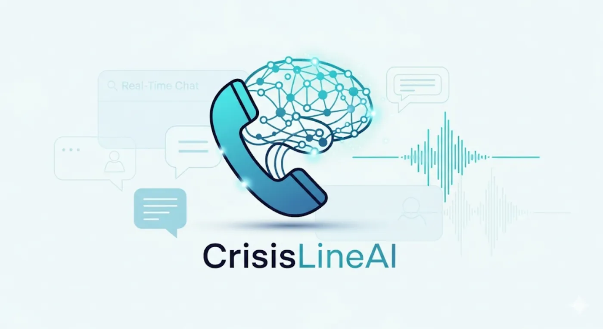

All projects · Hackathon project
CrisisLineAI
A crisis support chat and phone line where AI keeps people company until a counselor takes over.
- Year
- 2026
- Team
- Team of 3
- Kind
- AI and ML

The problem and the fix
Problem
When every counselor is busy, people reaching a crisis line wait alone, on the phone or in a chat window.
What we built
An AI agent answers right away by chat or voice, scores the risk level, and hands the conversation to a counselor with a summary.
- 1
A call or a chat comes in
- 2
The AI answers and keeps listening
- 3
Risk level and summary update
- 4
A counselor takes over
My part
I built the chat with its model calls, the counselor choices, the transcript view with risk badges and a summary button, and the Docker setup.
 Python
Python FastAPI
FastAPI LangChain
LangChain OpenAI API
OpenAI API Firebase
Firebase Twilio
Twilio- AssemblyAI
 Docker
Docker
- Answer at onceRealtime chat on Firestore with streamed replies.
- Take overA counselor dashboard with one-click takeover.
- See the riskEach conversation carries a risk level and a summary.
- Talk by phoneTwilio voice with AssemblyAI and ElevenLabs.
- Keep the recordFull transcripts after every call.